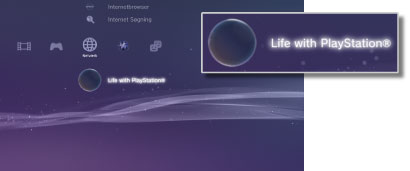

Netværk > Life with PlayStation®
Life with PlayStation®
Life with PlayStation® yder dynamisk webbaseret indhold som er organiseret i unikke kanaler som man kan browse ifølge tid og sted. Du kan vælge mellem forskellige typer indhold ved at vælge en kanal.
Når du bruger Life with PlayStation®, deltager du automatisk i Folding@home™-projektet. Folding@home™ er et distribueret computerprojekt, der varetages af Stanford University.
Start af Life with PlayStation®
For at bruge Life with PlayStation® skal du først downloade og installere Life with PlayStation®-applikationen. Vælg  (Life with PlayStation®) under
(Life with PlayStation®) under  (Netværk) for at downloade applikationen. Følg anvisningerne på skærmen for at fuldføre installationen.
(Netværk) for at downloade applikationen. Følg anvisningerne på skærmen for at fuldføre installationen.

Tips
- For at kunne installere Life with PlayStation®, skal der mindst være 500 MB ledig plads på PS3™-systemets harddisk.
- Hvis ikonet
 (Folding@home™) vises, skal du først opdatere applikationen Folding@home™ og derefter opdatere til Life with PlayStation®. Vælg (Folding@home™) under (Netværk) og følg derefter anvisningerne på skærmen for at opdatere applikationen Folding@home™. Vælg derefter (Folding@home™) under (Netværk) igen og følg derefter anvisningerne på skærmen for at opdatere til Life with PlayStation®.
(Folding@home™) vises, skal du først opdatere applikationen Folding@home™ og derefter opdatere til Life with PlayStation®. Vælg (Folding@home™) under (Netværk) og følg derefter anvisningerne på skærmen for at opdatere applikationen Folding@home™. Vælg derefter (Folding@home™) under (Netværk) igen og følg derefter anvisningerne på skærmen for at opdatere til Life with PlayStation®.
Afslutning af Life with PlayStation®
Hvis du vil afslutte Life with PlayStation®, skal du trykke på PS-tasten på den trådløse controller og derefter vælge  (Afslut) under (Netværk).
(Afslut) under (Netværk).
Indstilling af Auto-Start
Life with PlayStation® starter automatisk, hvis du ikke har brugt PS3™-systemet i nogen tid. Vælg (Life with PlayStation®) under (Netværk), tryk på  -tasten, og vælg derefter [Auto-Start] i indstillingsmenuen.
-tasten, og vælg derefter [Auto-Start] i indstillingsmenuen.
| Sluk | Vælg denne indstilling, så Life with PlayStation® ikke starter automatisk. |
|---|---|
| Efter 10 minutter | Vælg denne indstilling for at starte Life with PlayStation® efter 10 minutter. |
| Efter 20 minutter | Vælg denne indstilling for at starte Life with PlayStation® efter 20 minutter. |
| Efter 30 minutter | Vælg denne indstilling for at starte Life with PlayStation® efter 30 minutter. |
Tip
[Auto-Start] deaktiveres, når PS3™-systemets forbindelse til internettet afbrydes.
Sletning af Life with PlayStation®
Life with PlayStation®-programmet kan slettes fra harddisken. Vælg (Life with PlayStation®) under (Netværk), tryk på -knappen, og vælg derefter [Slet] i indstillingsmenuen.
Tip
-ikonet (Life with PlayStation®) slettes ikke fra XMB™, selvomprogrammet slettes.
Hvis du vælger ikonet, downloades Life with PlayStation®-programmet igen.